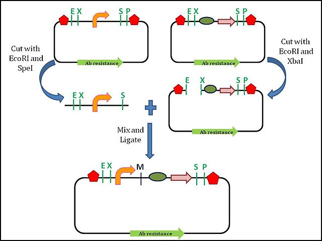

BioBricks™ is a standard for interchangable parts, developed with a view to building biological systems in living cells.
Lego bricks are used, mostly by children, to construct vehicles, buildings, andeven working robots. Since the human genome has been fully characterized,we can use a Lego-like approach to “build” entire living organisms from scratch. BioBrick parts are DNA sequences that have a defined structure and function. These parts share a common interface and are designed to be composed and incorporated into living cells to construct new biological systems. Larger BioBrick parts can be created by connecting smaller ones in any desired order. It’s like building a tower with Lego bricks.
Simple Genetic Circuit
RNA polymerase binds to the promoter and transcription of the entire circuit takes place to produce an mRNA which stops at the terminator. The ribosome then binds to the RBS on the mRNA which facilitates translation and the protein is expressed.
BioBricks

BioBrick Assembly
The first picture shows a plasmid (black circle) containing a biobrick which is the promoter (orange arrow). This is flanked by two pairs of restriction enzymes on either side of the two biobricks. E represents EcoR1, X is Xba1,S is Spe1 and P represents Pst1. The green arrow represents a gene that encodes for an antibiotic.
Similarly the second picture shows a plasmid containing the RBS (green circle) and protein coding region or the gene that needs to be expressed (pink arrow). Now in order to express the gene, acomplete genetic circuit has to be constructed which is shown in the third figure.
In order to do this we use a technique called biobrick assembly. The first plasmid is cut with two restriction enzymes i.e EcoR1 and Spe1 to get the insert which is the promoter with EcoR1 and Spe1 sticky ends. Similarly the second plasmid is also cut with the same set of restriction enzymes to generate sticky ends. The insert and the cut plasmid are now mixed and ligated that make a complete genetic circuit. When this plasmid is transformed into a host bacterial cell like E coli the protein is generated by transcription and translation.